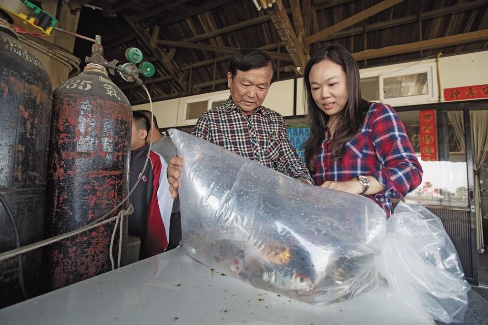
01
Family & the farm
Where the work began, and where its stakes became personal.
THE WOMAN BEHIND THE WATER
Ms. Chung turned a family inheritance into a life among the world’s finest koi. This is her story—and the people and fish at its heart.
01 / S-LEGEND
At Sakai Fish Farm’s 2018 auction in Japan, Ms. Chung bid as the Taiwan dealer for a client. The Kohaku S-Legend reached ¥203 million.
The number travelled around the world. Behind it were years of trust, an exceptional fish, and the judgment to recognize what others would remember.
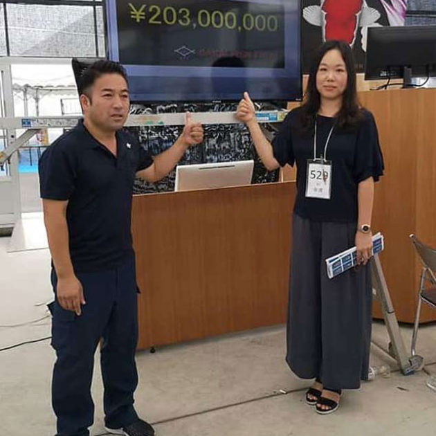
BEYOND THE BID
S-Legend was bred by Sakai Fish Farm. Her lineage matters to collectors and breeders, and the story of her offspring continues beyond that auction day.
Parent lines identified in an interview with Sakai Fish Farm’s breeder. Individual descendants will be added when documented.
02 / THE FARM
Ms. Chung grew up at Sing Chang Koi Farm in Yunlin. Art studies in Beijing took her away; the family business brought her back as CEO.
Under Ms. Chung’s leadership, Sing Chang brought its koi to international shows and built direct relationships with overseas buyers. Her work also included running EMDAT, an export association, and organizing koi shows in Taiwan.
The next chapter took shape in Pingtung, where Ms. Chung opened her own koi trading and research business: the International Koi Institute.
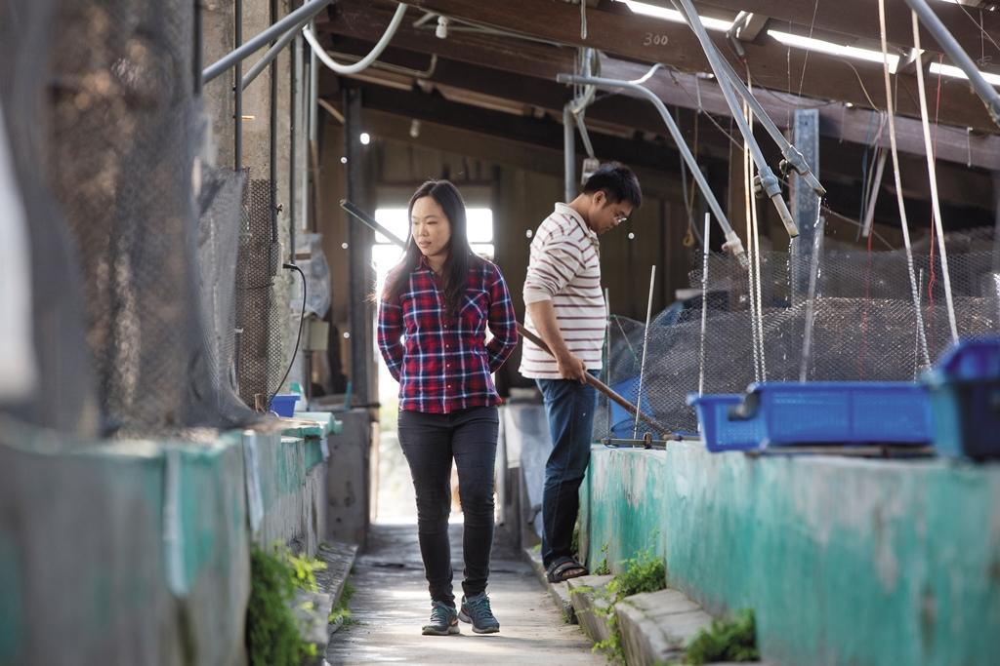

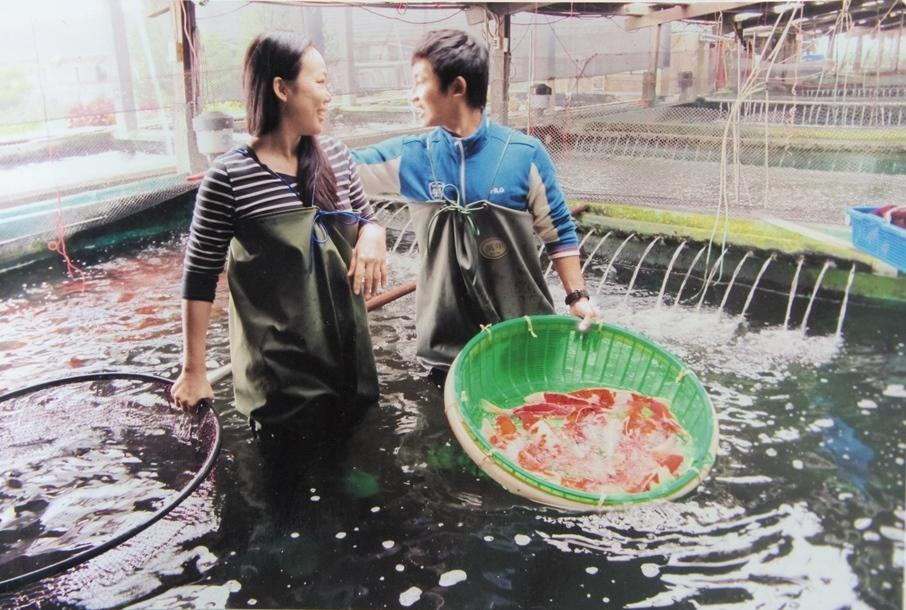
2014 · TEDxTAIPEI
On the TEDxTaipei stage, Ms. Chung spoke about returning to a family business under heavy debt and learning to face setbacks as choices.
Her story also reveals the work behind the trophies: finding her place in a male-dominated trade, reshaping a traditional koi company, and meeting overseas buyers directly instead of depending on intermediaries. She brought fish breeding into a wider, more connected market.
Watch “One Third of Life”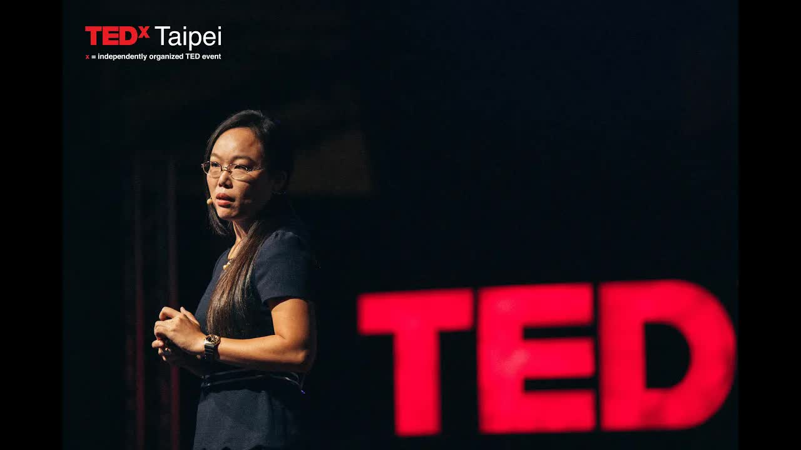
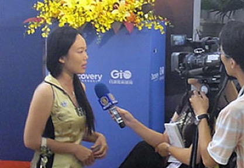
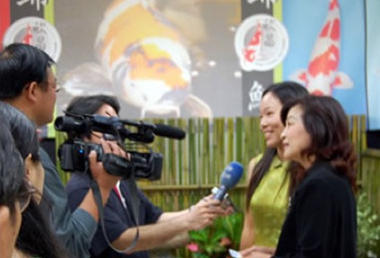
ON CAMERA
In 2011, Discovery Channel featured Ms. Chung’s entrepreneurial journey. Yunlin County held a preview event, and its announcement described how she brought Taiwanese koi to international competitions. The archived photographs preserve her speaking to the cameras.
03 / THE SHOW CIRCUIT
At the 2018 Holland Koi Show, Ms. Chung stood at the IKI Taiwan booth with British koi judges. Years earlier, she had begun taking fish to European shows and speaking directly with buyers. Those encounters shaped what she bred, how she presented it, and the partners she chose.
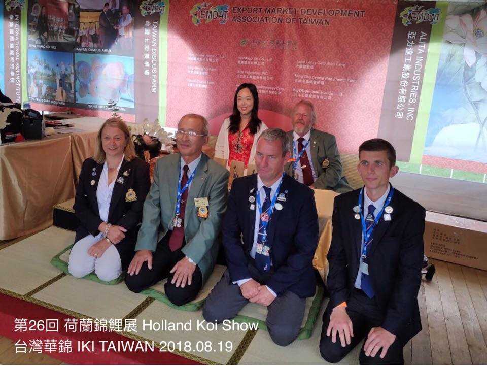

Ms. Chung visited the Holland show in 2003 and saw a market that barely knew Taiwanese koi. A Ministry of Agriculture account records her return under the “Formosa Taiwan” name; this 2009 photograph places her at the show. By 2010, CommonWealth reported that she attended five international shows a year and sold directly across borders.
See the Ministry accountFROM THE ARCHIVE
The old show sites preserved exhibition photographs, sales reports, and captions naming Ms. Chung with customers and awards.
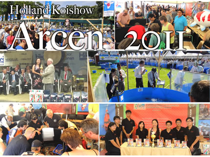
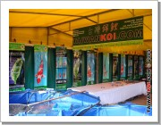
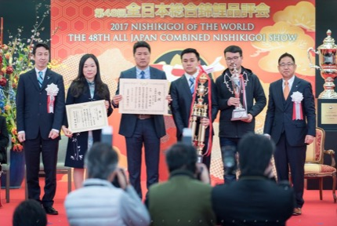
THE LONG JOURNEY
At her Pingtung trans-shipment hub, Japanese koi can be received, prepared, and sent onward to distant buyers. For routes where timing and cost make sense, her expertise in packing fish for long journeys becomes part of protecting the value of the fish itself.
Official transfer-facility registry04 / THE KOI
Colour, form, movement, and lineage. Ms. Chung’s eye brings them together. These archival images offer a first look while the current collection is being prepared.

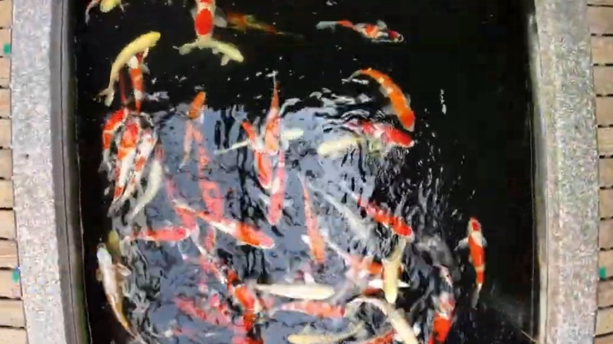
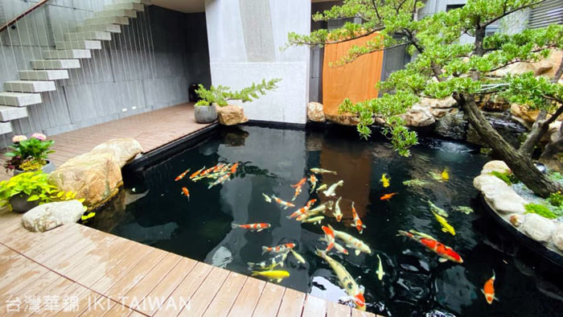
THE ART OF SEEING AHEAD
Ms. Chung pioneered detailed before-and-after studies on Facebook: a young koi could look unassuming at sale, then develop into something remarkable. She taught people to read body shape, pattern, colour, and potential over time. Select fish from Sakai and Dainichi are now documented this way too.
The first photograph records the fish as it was selected or sold.
A later photograph shows how care, genetics, and time changed the fish.
An authenticated photo pair and her original analysis will replace this editorial preview.
CURRENT COLLECTION
The available fish catalogue is being assembled. Tell us what you are looking for and we can begin a conversation.
05 / THE PEOPLE
Family, breeders, dealers, and collectors all stand behind the fish. Their relationships are part of the Koiqueen story.

Where the work began, and where its stakes became personal.
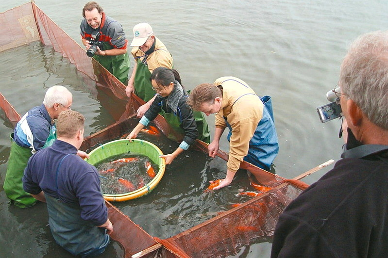
The relationships that connect expertise across countries.
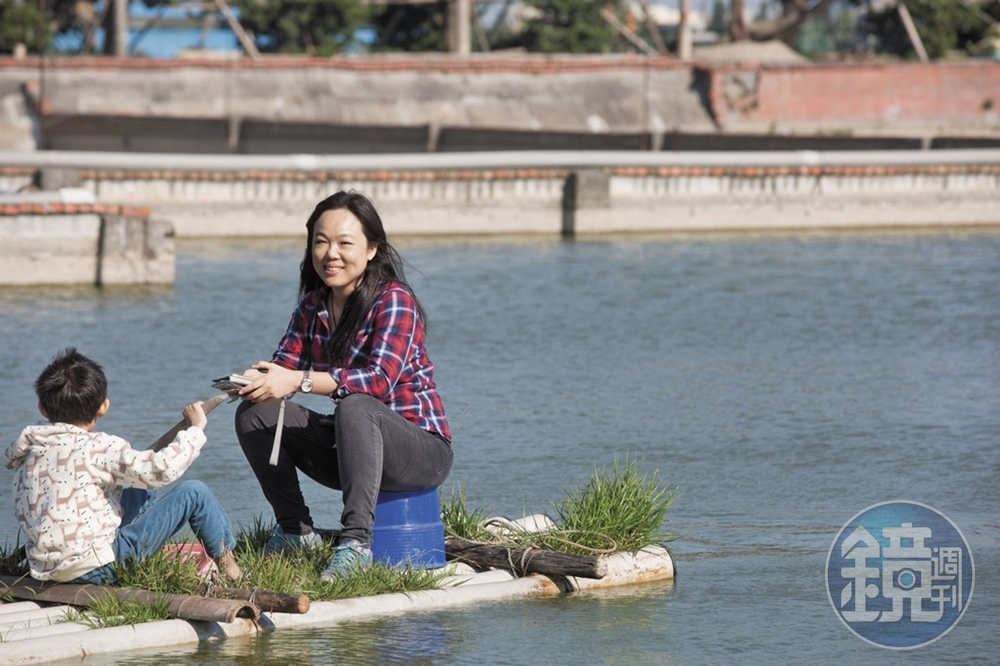
A living craft is carried by people willing to learn and share it.
BEYOND THE PONDS
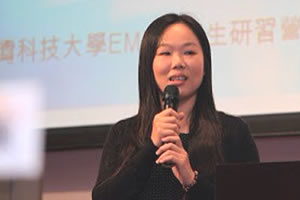
She studied art in Beijing before returning to the farm. That eye for form and colour became part of how she selected, presented, and spoke about koi.
She later earned an EMBA in Taiwan and shared what she learned in university talks. She also took students to see international koi shows and Japanese farms: the market she built became something she could teach.
University lecture recordWATCH & LISTEN
A TaiwanPlus profile follows Ms. Chung’s journey from the family farm into the international koi world. Future short films and pond footage can live here without interrupting the story.
Watch the profile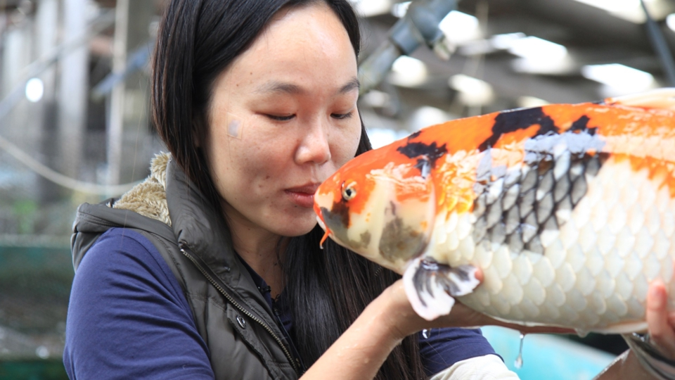
THE RECORD
Reporting, film, and public records trace the work across years. Open the original sources.
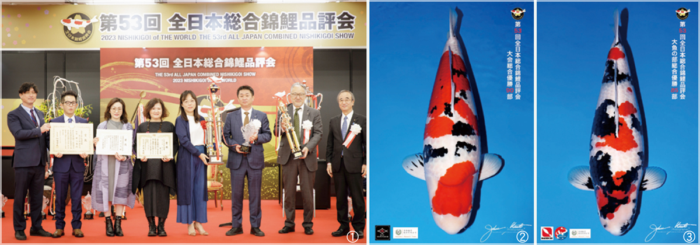